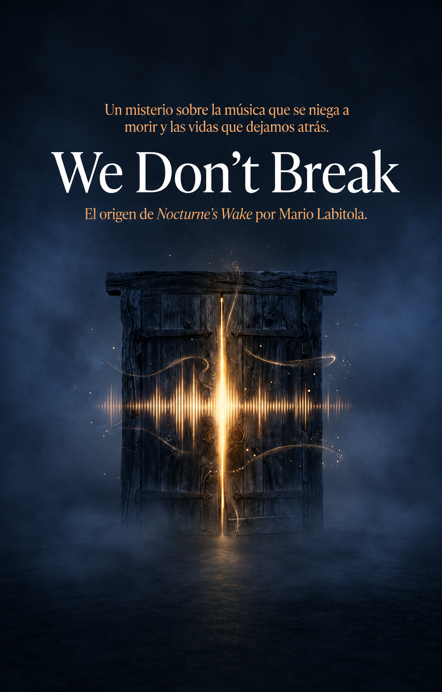

Esto no es solo música. Es una nueva forma de hacer y sentir la música.
Nocturne's Wake es un proyecto que explora nuevas facetas musicales.
No es una banda generada por inteligencia artificial: es una obra dirigida por un autor.
"Un pincel en las manos correctas es una herramienta de artista;
en las manos equivocadas, es solo un pincel."
LISTEN NOW
VISITAS
Catálogo Discográfico
Explora la producción musical oficial de Nocturne's Wake.
WE DON'T BREAK (ÁLBUM DEBUT)
2026 · 15 CANCIONES
El trabajo conceptual fundacional que conecta la tragedia de 2001 con el despertar sonoro en 2026. Incluye temas emblemáticos como Burn with me, Come back loud, White Kiss y King of the Quiet.
La expansión sonora y lírica nacida de las profundidades de El Excedente. Un viaje de intensidades gothic darkwave, grunge alternativo y explosiones de heavy groove metal.
El Excedente es la masa semántica y emocional compuesta por todas las canciones, palabras e ideas no pronunciadas a lo largo de décadas de silencio.
No es un lugar físico, sino una dimensión de memoria acumulada. De allí emergen las entidades de Rían, Cal, Dorian y Marcus: personificaciones de diferentes estados emocionales y musicales nacidos para darle forma al sonido de Nocturne's Wake.
El Bar La Canción es el portal itinerante. Una intersección entre la realidad tangible y la dimensión semántica de El Excedente.
Fue en este espacio donde, tras un sueño hiperrealista en 2026, el creador se reenganchó con las cuatro entidades que darían vida al proyecto, permitiendo rescatar las letras y composiciones guardadas durante 25 años.
El País de las Segundas Vidas representa la columna vertebral filosófica de Nocturne's Wake. Nace de la premisa fundamental de que ninguna herida, silencio o fractura del pasado tiene el poder definitivo de apagar la voz artística.
"La tecnología no reemplaza el dolor humano; le otorga una nueva oportunidad de cantar."
Mario Edgardo Labitola Vázquez (El Navegante) es el autor, compositor y arquitecto detrás de Nocturne's Wake.
Tras sobrevivir a una tragedia en Montevideo en el año 2001 que afectó su capacidad de cantar tradicionalmente, guardó sus composiciones durante 25 años. En 2026, asumió la dirección artística integral utilizando la tecnología digital como prótesis expresiva para dar vida a la banda virtual.
¿Qué es Nocturne's Wake?
Nocturne's Wake es un proyecto musical, artístico y universo transmedia nacido en Uruguay, creado y dirigido por el autor uruguayo Mario Edgardo Labitola Vázquez.
Nacido a partir de un trágico suceso en el año 2001 y tras un silencio de un cuarto de siglo, el proyecto combina música, literatura, estética dark cinematic y tecnología digital utilizada como una prótesis existencial para dar voz a composiciones guardadas en cuadernos a lo largo de 25 años.
El Origen y El Lore Central
El 17 de mayo de 2001, a los 20 años de edad, Mario sobrevivió a un disparo en Montevideo mientras trabajaba como sereno. Las reconstrucciones anatómicas posteriores resultaron en una alteración de la resonancia fonatoria que le impidió cantar tradicionalmente, truncando sus planes musicales en el under montevideano de los años noventa.
En 2026, tras acudir a sus viejos cuadernos y atravesar un sueño hiperrealista, descubrió la puerta del Bar La Canción: un portal itinerante entre nuestra realidad y la masa de memoria emocional conocida como El Excedente. Allí se encontró con las cuatro entidades que articulan el proyecto: Rían, Cal, Dorian y Marcus.
El Concepto
"Un pincel en las manos correctas es una herramienta en las manos de un artista; un pincel en las manos equivocadas solamente es un pincel."
Nocturne's Wake es un proyecto de simbiosis humano-digital. No es una banda generada por inteligencia artificial: es una obra dirigida por un autor, donde la tecnología funciona como instrumento y no como origen.
Recibe adelantos, lanzamientos y contenido exclusivo de Nocturne's Wake antes que nadie.
WE DON'T BREAK
El origen de Nocturne's Wake

Bitácora de cuadernos We Don't Break El origen de Nocturne's Wake
ENTRADA 01
Una mente fragmentada por una tragedia, 25 años de silencio, una noche imposible y un viejo cuaderno lleno de canciones que despiertan.
ENTRADA 02
No es ficción. Es la historia real de alguien que decidió no rendirse, que encontró en la tecnología la prótesis para devolverle la voz que la violencia le arrebató.
ENTRADA 03
Abrí las puertas, entra al mundo de Nocturne's Wake. Descubrí el lore detrás de la historia absolutamente gratis.
Dorian es la sombra. El arquetipo de lo que existe entre la luz y la oscuridad: seductor, calculated, cinematográfico. Su música no invita: atrapa. No explica: insinúa.
"No estoy aquí para que me entiendas. Estoy aquí para que no puedas ignorarme."
CAL
Grunge · Alternative Rock
Cal es la resiliencia. No el triunfo fácil, sino el que viene después de haber perdido algo. Es el ancla emocional del proyecto.
"No busco tu aprobación. Busco tu reconocimiento."
MARCUS
Heavy Metal · Groove Metal
Marcus es la fuerza. Representa la resistencia pura y la sanación a través de la potencia sonora.
"La fuerza no es no sentir. Es seguir de pie mientras sientes todo."
RÍAN
Pop-Rock · Alternative
RÍAN es la conexión. Representa la juventud recobrada, el carisma y la chispa vital.
"La conexión no es debilidad. Es la razón por la que todo esto existe."